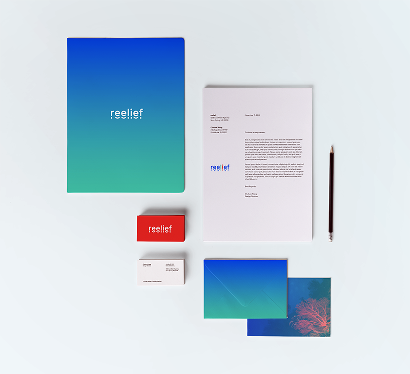

An identity system proposed for a coral reef conservation campaign. The logotype is a typographic representation of the shifting landscape of underwater reefs. The color choices represent coral, plants and the sea. The brand brings attention to the vibrancy and abundance that coral reefs contribute to our global ecosystem.

